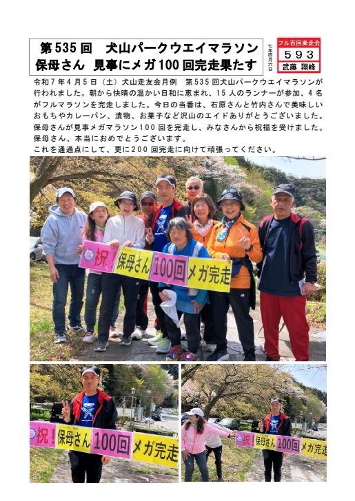

2025-04-05 05:20:33
会員No. 896 (愛知県 53歳)

| No | 開催日 | 大会回数 | 大会名 | 開催地 | 種目(㎞) | 記録 |
|---|---|---|---|---|---|---|
| 1 | 2002-02-03 | 第25回 | 京都木津川 | 京都府 | フル | 5:20:30 |
| 2 | 2009-12-13 | 第5回 | さの | 栃木県 | フル | 4:28:49 |
| 3 | 2010-04-18 | 第5回 | 掛川新茶 | 静岡県 | フル | 5:01:40 |
| 4 | 2010-11-14 | 第23回 | いびがわ | 岐阜県 | フル | 4:15:19 |
| 5 | 2010-12-12 | 第6回 | さの | 栃木県 | フル | 4:12:46 |
| 6 | 2011-02-06 | 第28回 | 京都木津川 | 京都府 | フル | 4:40:13 |
| 7 | 2011-02-27 | 第5回 | 東京 | 東京都 | フル | 4:40:19 |
| 8 | 2012-02-26 | 第6回 | 東京 | 東京都 | フル | 5:37:59 |
| 9 | 2013-02-24 | 第7回 | 東京 | 東京都 | フル | 4:45:19 |
| 10 | 2018-10-28 | 第10回 | 島田大井川 | 静岡県 | フル | 4:33:07 |
| 11 | 2018-11-11 | 第31回 | いびがわ | 岐阜県 | フル | 4:35:25 |
| 12 | 2018-12-09 | 第30回 | 袋井 | 静岡県 | フル | 4:19:05 |
| 13 | 2019-02-03 | 第24回 | 紀州口熊野 | 和歌山 | フル | 4:18:18 |
| 14 | 2019-03-03 | 第13回 | 東京 | 東京都 | フル | 4:02:46 |
| 15 | 2019-04-14 | 第14回 | 掛川新茶 | 静岡県 | フル | 4:36:02 |
| 16 | 2019-05-26 | 第36回 | 黒部名水 | 富山県 | フル | 4:46:43 |
| 17 | 2019-10-06 | 第3回 | 松本 | 長野県 | フル | 4:26:11 |
| 18 | 2019-10-27 | 第5回 | 金沢 | 石川県 | フル | 4:16:26 |
| 19 | 2019-12-08 | 第31回 | 袋井 | 静岡県 | フル | 5:48:01 |
| 20 | 2020-02-02 | 第25回 | 紀州口熊野 | 和歌山 | フル | 4:13:32 |
| 21 | 2021-10-09 | 第9回 | 柴又100 | 東京都 | 100 | 12:24:18 |
| 22 | 2021-10-31 | 第7回 | 金沢 | 石川県 | フル | 3:43:47 |
| 23 | 2021-11-28 | 第10回 | 富士山 | 山梨県 | フル | 3:53:03 |
| 24 | 2021-12-12 | 第12回 | 奈良 | 奈良県 | フル | 3:52:40 |
| 25 | 2021-12-26 | 第7回 | 静岡大井川 | 静岡県 | フル | 3:58:44 |
| 26 | 2022-01-16 | 第23回 | 木曽川 | 岐阜県 | フル | 3:43:08 |
| 27 | 2022-03-06 | 第15回 | 東京 | 東京都 | フル | 3:50:59 |
| 28 | 2022-04-17 | 第32回 | 富士五湖 | 山梨県 | 100 | 12:54:50 |
| 29 | 2022-05-22 | 第39回 | 黒部 | 富山県 | フル | 4:09:44 |
| 30 | 2022-05-15 | 第8回 | 石垣島 | 鹿児島 | 60 | 9:12:32 |
| 31 | 2022-06-05 | 第42回 | 千歳国際 | 北海道 | フル | 4:00:00 |
| 32 | 2022-08-28 | 第34回 | 北海道 | 北海道 | フル | 4:14:11 |
| 33 | 2022-11-20 | 第10回 | 神戸 | 兵庫県 | フル | 4:18:08 |
| 34 | 2022-12-04 | 第17回 | 湘南 | 神奈川 | フル | 4:17:51 |
| 35 | 2022-12-11 | 第36回 | 青島太平洋 | 宮崎県 | フル | 4:04:30 |
| 36 | 2023-01-08 | 第40回 | いぶすき | 鹿児島 | フル | 5:22:41 |
| 37 | 2023-02-12 | 第60回 | 愛媛 | 愛媛県 | フル | 3:53:03 |
| 38 | 2023-02-19 | 第13回 | 京都 | 京都府 | フル | 3:56:37 |
| 39 | 2023-02-26 | 第11回 | 大阪 | 大阪府 | フル | 3:54:49 |
| 40 | 2023-03-12 | 第1回 | 琵琶湖 | 滋賀県 | フル | 3:58:42 |
| 41 | 2023-04-16 | 第33回 | 富士五湖 | 山梨県 | 100 | 13:24:49 |
| 42 | 2023-09-16 | 第18回 | 佐渡島 | 新潟県 | 176 | 42:16:08 |
| 43 | 2023-11-23 | 第38回 | 福知山 | 京都府 | フル | 4:37:04 |
| 44 | 2023-11-26 | 第39回 | 名古屋アド | 愛知県 | フル | 4:56:52 |
| 45 | 2023-12-17 | 第2回 | みえ松阪 | 三重県 | フル | 5:37:55 |
| 46 | 2023-12-24 | 第118回 | 金の鯱 | 愛知県 | フル | 4:28:58 |
| 47 | 2023-12-29 | 第1回 | 大阪走納め | 大阪府 | フル | 4:12:14 |
| 48 | 2024-01-06 | 第520回 | 月例犬山 | 愛知県 | フル | 4:25:20 |
| 49 | 2024-01-13 | 第41回 | いぶすき | 鹿児島 | フル | 4:38:50 |
| 50 | 2024-01-20 | 第2回 | にしお | 愛知県 | フル | 4:05:26 |
| No | 開催日 | 大会回数 | 大会名 | 開催地 | 種目(㎞) | 記録 |
|---|---|---|---|---|---|---|
| 51 | 2024-01-27 | 2024年 | 平塚江ノ島 | 神奈川 | フル | 7:42:26 |
| 52 | 2024-02-23 | 第521回 | 月例犬山 | 愛知県 | フル | 5:20:04 |
| 53 | 2024-02-11 | 第61回 | 愛媛 | 愛媛県 | フル | 4:09:16 |
| 54 | 2024-02-18 | 第11回 | 京都 | 京都府 | フル | 4:10:51 |
| 55 | 2024-02-25 | 第12回 | 大阪 | 大阪府 | フル | 4:24:49 |
| 56 | 2024-03-03 | 第44回 | 丹波篠山 | 兵庫県 | フル | 5:14:22 |
| 57 | 2024-03-17 | 第15回 | 鳥取 | 鳥取県 | フル | 4:49:35 |
| 58 | 2024-03-31 | 第1回 | ふくい | 福井県 | フル | 4:18:04 |
| 59 | 2024-04-06 | 第523回 | 月例犬山 | 愛知県 | フル | 4:56:10 |
| 60 | 2024-04-13 | 2024年 | 江南 | 愛知県 | フル | 4:56:10 |
| 61 | 2024-04-20 | 第34回 | 富士五湖 | 山梨県 | 100 | 13:54:09 |
| 62 | 2024-05-03 | 第1回 | 浜街道 | 茨城県 | 157 | 27:37:49 |
| 63 | 2024-05-18 | 2024年 | 月例名古屋城 | 愛知県 | フル | 5:11:06 |
| 64 | 2024-06-02 | 第44回 | 千歳 | 北海道 | フル | 4:36:39 |
| 65 | 2024-07-06 | 第526回 | 月例犬山 | 愛知県 | フル | 6:15:10 |
| 66 | 2024-07-18 | 第254回 | 皇居 | 東京都 | フル | 6:15:10 |
| 67 | 2024-07-27 | 第26回 | 箱根下京 | 神奈川 | フル | 7:22:23 |
| 68 | 2024-08-04 | 第527回 | 月例犬山 | 愛知県 | フル | 6:35:15 |
| 69 | 2024-08-11 | 2024年 | 江南 | 愛知県 | フル | 6:45:20 |
| 70 | 2024-08-15 | 第258回 | 皇居 | 東京都 | フル | 6:02:14 |
| 71 | 2024-08-25 | 第36回 | 北海道 | 北海道 | フル | 5:41:13 |
| 72 | 2024-09-07 | 第528回 | 月例犬山 | 愛知県 | フル | 6:34:37 |
| 73 | 2024-09-21 | 第19回 | 佐渡島 | 新潟県 | 99 | 17:52:27 |
| 74 | 2024-10-05 | 第529回 | 月例犬山 | 愛知県 | フル | 5:15:20 |
| 75 | 2024-10-06 | 第22回 | 弘前白神 | 青森県 | フル | 4:36:44 |
| 76 | 2024-11-27 | 第123回 | ジョイフル | 愛知県 | フル | 5:58:10 |
| 77 | 2024-11-03 | 第34回 | ぐんま | 群馬県 | フル | 4:26:19 |
| 78 | 2024-11-17 | 第1回 | 南伊豆 | 静岡県 | フル | 6:40:05 |
| 79 | 2024-11-24 | 第13回 | 富士山 | 山梨県 | フル | 4:39:30 |
| 80 | 2024-12-01 | 第4回 | 国宝松江城 | 島根県 | フル | 4:38:08 |
| 81 | 2024-12-08 | 第38回 | 青島太平洋 | 宮崎県 | フル | 4:53:08 |
| 82 | 2024-12-15 | 第4回 | みえ松阪 | 三重県 | フル | 5:24:10 |
| 83 | 2024-12-29 | 第2回 | 大阪走納め | 大阪府 | フル | 5:22:29 |
| 84 | 2025-01-04 | 第532回 | 月例犬山 | 愛知県 | フル | 5:35:24 |
| 85 | 2025-01-12 | 第42回 | いぶすき | 鹿児島 | フル | 5:10:44 |
| 86 | 2025-01-19 | 第3回 | にしお | 愛知県 | フル | 5:40:18 |
| 87 | 2025-01-26 | 第72回 | 勝田全国 | 茨城県 | フル | 4:26:10 |
| 88 | 2025-01-30 | 第281回 | 皇居 | 東京都 | フル | 5:50:41 |
| 89 | 2025-02-01 | 第533回 | 月例犬山 | 愛知県 | フル | 5:05:14 |
| 90 | 2025-02-06 | 第282回 | 皇居 | 東京都 | フル | 5:25:35 |
| 91 | 2025-02-15 | 2025年 | 月例名古屋城 | 愛知県 | フル | 5:10:15 |
| 92 | 2025-02-16 | 第12回 | 熊本城 | 熊本県 | フル | 4:27:48 |
| 93 | 2025-02-23 | 第17回 | 吉備路 | 岡山県 | フル | 4:26:55 |
| 94 | 2025-02-27 | 第285回 | 皇居 | 東京都 | フル | 5:03:12 |
| 95 | 2025-03-01 | 第534回 | 月例犬山 | 愛知県 | フル | 4:55:12 |
| 96 | 2025-03-02 | 第7回 | 鹿児島 | 鹿児島 | フル | 4:43:41 |
| 97 | 2025-03-08 | 第2回 | 東京品川 | 東京都 | フル | 4:40:46 |
| 98 | 2025-03-15 | 2025年 | 月例名古屋城 | 愛知県 | フル | 4:50:11 |
| 99 | 2025-03-23 | 第10回 | 佐賀 | 佐賀県 | フル | 4:44:52 |
| 100 | 2025-04-05 | 第535回 | 月例犬山 | 愛知県 | フル | 4:38:24 |